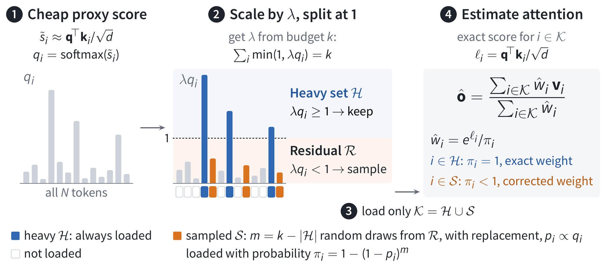
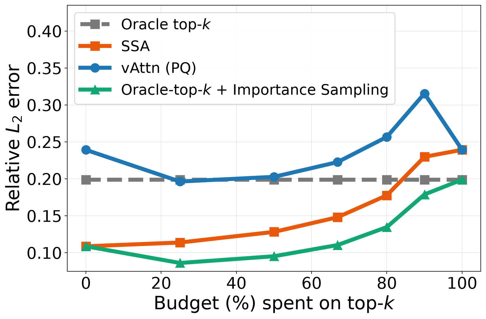

In long-context decoding, every generated token reads the whole KV cache from HBM, so the longer the context, the slower attention gets. Sparse attention reads only a small subset of tokens, but at 50× sparsity existing methods fall far short of dense attention: on RULER-HARD 32K with Llama-3.1-8B, dense attention scores 88.76 while PQCache-style top-k gets only 72.51. This paper proposes Stratified Sparse Attention (SSA). The idea is that high-scoring tokens are always kept, the remaining long tail is sampled by proxy score, and each sampled token is up-weighted by its probability of being sampled. At the same 50× sparsity, Llama-3.1-8B's score comes back to 83.67; on AIME 2025 with Qwen3.5-9B, SSA scores 59.8 versus 36.7 for PQCache. The authors also wrote dedicated CUDA kernels, and at 1M context decode attention is 2.96× faster than FlashInfer.

1. The problem: top-k drops the long tail, and uniform sampling wastes budget
With a budget of tokens, existing methods allocate it in one of three ways. The first is retrieval only: Quest and PQCache pick the tokens with the highest proxy scores, and Tactic does top-p. This works well when attention is concentrated on a few tokens. Once the distribution is more spread out, though, all attention mass outside the set is lost, and with even a slightly off proxy score, truly important tokens land just outside the boundary. The second is sampling only: MagicPig samples approximately with LSH and applies an importance correction, which covers more ground but has high variance at small budgets. The third is hybrid: vAttention keeps the top-k and samples uniformly from the remaining tokens. It beats the other two, but under aggressive sparsity it is still clearly behind dense attention.
The authors argue that the problem is the word "uniform". The attention mass left outside the top-k is very unevenly distributed, and uniform sampling spends the same budget on tokens that contribute almost nothing. They first ran a small experiment: for the same budget, sampling by proxy score gives lower relative error than uniform sampling across budget splits and sparsity levels (figure below). This is the starting point for SSA.

2. Method: stratify, then sample, then correct by probability
Start with the basic form of sampling-based sparse attention. Let and . If each token enters the set with probability , multiply it by :
Intuitively, when a token that was unlikely to be sampled does get sampled, it has to speak for a large group of similar tokens that were not, so its weight is scaled up. SSA builds on this form in three steps.
First it decides which tokens are always kept. Apply softmax to the proxy scores (in the experiments, PQCache's product-quantization scores) to get , then find a such that . Every token with goes into the heavy set and is kept directly. The remaining budget is left for sampling from the other tokens, the residual set . This way the size of the heavy set needs no hand-tuning; the proxy distribution decides it. The sharper the distribution, the larger the heavy set.
Then it samples from the residual set. Renormalize over to get , draw times with replacement, and deduplicate to get . The probability that a residual token is drawn at least once is , while tokens in the heavy set have .
Finally it computes exact attention scores only for , uses weights , and takes the normalized weighted sum. Tokens drawn more than once are counted once, so the number of tokens actually read never exceeds .
Here is an illustrative example (the numbers are hypothetical). The context is 1 million tokens, sparsity is 50×, and the budget is . Suppose 8,000 tokens satisfy ; they are kept directly. The remaining 12,000 draws are made by over roughly 990,000 residual tokens. When a token with a very small is drawn, its is large, and it stands for a large long tail of tokens that each score low but together still hold a fair amount of attention mass. Top-k throws this whole tail away, and uniform sampling spends most of its draws on tokens near zero.
The existing families of methods are all special cases of this framework: with only the heavy set, it is top-k or top-p; with an empty heavy set, it is pure sampling; with a uniform proposal, it is the vAttention-style hybrid.
The authors also prove an error bound that shows how the budget should be split. Let be the true attention mass in the residual set, and let measure how far the proposal is from the true residual distribution (, with equality when they match). Theorem 2 says that with probability at least , the output error is of the order , with deduplication adding only a constant factor. So keeping more heavy tokens lowers , keeping more sampling budget raises , and the two have to be traded off. And once the proxy score underestimates an important residual token, grows and the error rises with it.
The framework does not depend on which approximate retrieval method is used. Any top-k method that produces proxy scores (PQCache, Quest and so on) can serve directly as SSA's proposal, and when the retrieval method improves, SSA improves with it.
3. Implementation: keeping sampling from slowing decode
Long-context decoding is bound by memory bandwidth, and what SSA saves is the traffic of reading KV. To run fast, the actual kernel does not use an adaptive ; it fixes the fraction of the budget given to the heavy set, and the authors report that this matches the theoretical version closely. A decode step has four stages. The first three scan the entire context, but read only a few bytes per token.
The first stage computes proxy scores. Each key is stored as a 16-byte PQ code (16 subspaces, 256 centroids), while an fp16 KV pair at head dimension 256 takes 1 KiB, so scanning the PQ codes is far cheaper than reading KV. Masks for sink and local tokens are handled in the same kernel, so no extra pass is needed.
The second stage selects the heavy set with radix top-k. The returned indices are unsorted, because the estimator above does not depend on order.
The third stage samples the residual. Building a distribution and sampling over a million tokens directly is too slow, so the authors sample hierarchically: each draw first picks a 1024-token chunk, then a 32-token sub-tile within it, and finally one token among those at most 32. Duplicate samples are removed with a per-row hash table. is clamped from below at to keep individual weights from blowing up, at the cost of a small bias. Random numbers come from a counter-based RNG, which keeps the kernel compatible with CUDA graphs.
The fourth stage gathers the selected K and V from the paged KV cache and computes attention with an online softmax. To use more parallelism, each query head is split across several thread blocks, and the parts are merged with log-sum-exp. The number of splits matters: at 1M context and batch 1, 64 splits are 1.58–1.71× faster than 32. Going to 128 or 256 splits is slower, because launch and merge overhead outweighs the extra parallelism.
4. Experiments: the biggest gains are at aggressive sparsity, and proxy-score quality is still the bottleneck
There are three baselines: PQCache, vAttention (with PQ scores), and Oracle-top-k. Oracle-top-k computes exact scores before picking the top-k, so it cannot speed anything up; it serves only as a reference for "how good deterministic retrieval can get". All methods keep 128 sink tokens and 128 local tokens. The models are Llama-3.1-8B, Qwen3.5-4B/9B and Ministral-3-3B/8B, plus Qwen3.5-27B on LongBench.
Start with RULER-HARD at 50× sparsity. PQCache, vAttention (PQ) and SSA use the same PQ scores and the same budget and differ only in how the budget is split, so the gaps in the table below can be attributed directly to the allocation.
| Model | Length | Dense | PQCache | vAttn (PQ) | Oracle-top-k | SSA |
|---|---|---|---|---|---|---|
| Llama-3.1-8B | 32K | 88.76 | 72.51 | 66.71 | 78.80 | 83.67 |
| Llama-3.1-8B | 128K | 71.26 | 39.73 | 39.45 | 56.10 | 47.53 |
| Ministral-3-3B | 32K | 86.69 | 70.81 | 69.26 | 72.81 | 82.05 |
| Ministral-3-8B | 32K | 89.33 | 81.83 | 78.69 | 86.61 | 84.17 |
| Ministral-3-8B | 128K | 81.45 | 62.99 | 63.78 | 75.83 | 69.25 |
SSA beats PQCache and vAttention (PQ) in every row. On Ministral-3-8B it retains 94% and 85% of the dense score at 32K and 128K. Note, though, that in the two 128K rows and in the Ministral-3-8B 32K row, Oracle-top-k is still higher than SSA. This shows the proxy score itself is not accurate enough, which is a ceiling SSA cannot get around. On the Qwen3.5 models every sparse method is within 2 points of dense, so there is little for SSA to win.
AIME 2025 requires generating 32K tokens of long reasoning, and here SSA's advantage grows with sparsity. Qwen3.5-9B scores 66.3 dense. At 50× sparsity SSA scores 59.8, while Oracle-top-k gets only 48.3 and PQCache 36.7. At 100× sparsity SSA still has 51.5, while vAttention (PQ) has dropped to 3.5. Conversely, at only 5× sparsity vAttention (PQ) is better, 65.4 to 61.0, so SSA's gains are concentrated in the aggressive-sparsity range.
The ablation on the heavy fraction shows that neither part can be dropped. With between 0.2 and 0.8, scores are all 61.0–64.0. Giving the whole budget to sampling ($h=0$) yields only 40.2–42.5, and giving it all to top-k ($h=1$) yields 49.4–53.8.
LOFT and LongBench show no difference. On LOFT, SSA has the lowest attention error among non-oracle methods in every setting, but the task metric subspan-EM differs by at most 0.04 across methods. On LongBench (Qwen3.5-27B), every sparse method is within 1 point of dense. In other words, lower error does not necessarily turn into a higher task score; it depends on how sensitive the task is to sparsity.
Speed is measured on a single H200 (16 query heads, 4 KV heads, head dimension 256, fp16 KV). With short contexts SSA is actually slower, because the fixed cost of the first three stages is not amortized: at batch 1 and 128K it runs at only 0.60–0.74× the speed of FlashInfer. The longer the context, the better the trade. At 1M, 50× sparsity is 1.79× faster, 20× is 1.39× faster, and 10× is only 1.07× faster. Larger batches give larger gains, reaching 2.96× at 1M, batch 16 and 50× sparsity.

Kernel optimization is why SSA beats dense even at batch 1. A reference implementation of the same algorithm without the optimizations from Section 3 runs at only 0.37–0.47× FlashInfer and catches up only at batch 8. The optimizations make it 2.95–3.80× faster. Within that, hierarchical sampling is 1.21–3.16× faster than chunk-only sampling, and at 1M context with $h=0.4$ the sampling itself takes only 0.30–1.18 ms.
5. Limitations and practical value
There are several limitations. The actual kernel uses a fixed fraction , and there is not yet an equally efficient implementation of adaptive allocation. Clamping introduces a small bias. Sampling is random, so decoding the same request twice does not give identical attention outputs, and reproducibility requires fixing the random seed. Below 128K at batch 1, SSA is slower than FlashInfer. In settings where sparsity barely costs anything to begin with, such as Qwen3.5 or LongBench, SSA has no clear advantage. As a next step, the authors plan to make SSA verifiable, meaning the user sets an approximation quality and the system guarantees it.
For industry, the scenario where SSA fits is clear: decode services with million-token contexts, large batches, and sparsity pushed beyond 20–50×, such as session histories of long-horizon agents, very long document QA, and long reasoning-chain generation. If your system already has top-k retrieval such as PQCache or Quest, adding SSA is a small change. The retrieval index is reused as is; you only move part of the budget from top-k to sampling by proxy score and add the correction. Before going live, sweep on your own tasks. In the paper anything from 0.2 to 0.8 works well, while pure top-k and pure sampling are both clearly worse. If you only need 5–10× sparsity, existing top-k or vAttention is probably enough; SSA's gains are mainly in the more aggressive range.